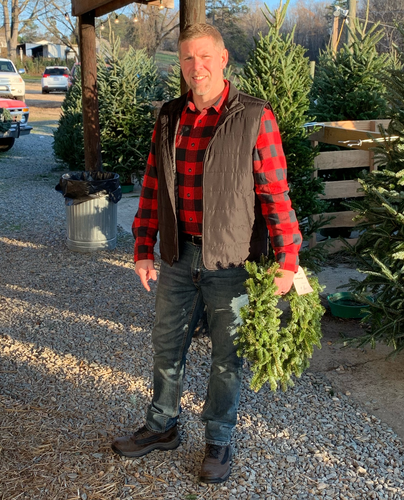

About Me
Straight-shooter with a reputation for getting the job done. I am considered a jack of all trades and master of time management. I have lived in GA, NY, VA, and I currently reside in Fuquay-Varina, NC.
I enjoy solving problems, process improvement, and training others. I believe in planning and continuous measurable improvement. Working hard and working smart are synonymous in my world. I have a resume full of talking points regarding overcoming challenges and accomplishments.
As far as interests are concerned, I really only have a few at the moment. Spending time with family, relaxing with a cold one, and getting a "good" night's sleep(rare). I am always in pursuit of self-improvement in any capacity.
This page is in it's infancy stage. I will update and redesign as additional projects are completed and experiences are gained.